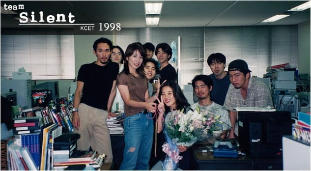
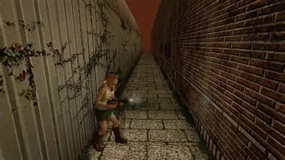

"Silent Hill" é uma franquia de jogos japonesa desenvolvida pela Konami.
Iniciada no dia 24 de fevereiro de 1999 pela equipe da Konami, Team Silent, e por meio do jogo de mesmo nome, "Silent Hill" é dos gêneros survival horror (subgênero de jogos de terror em que o personagem principal fica menos no controle e tem que solucionar quebra-cabeças e encontrar itens para sobreviver) e de tiro em terceira pessoa, sendo bastante influenciada pelo terror psicológico.
Como visto, a franquia tem como principal ambiente Silent Hill, uma cidade fictícia sobrenatural. Nela, os personagens são atraídos para lá, e, portanto, têm que sobreviver a eventos paranormais relacionados ao seu passado.

